同样的结构，少一半线。
R30「收敛」得 65 分，追平 R28 的最好成绩，没有批注。R31 不改方向：一个对象一块面、少拆卡、动效克制、控件全平。只把 Refactoring UI 审计出的十条落实下去：少边框、间距尺、灰字对比 ≥ 4.5、三级灰只给时间编号、字号六档、标签并进值里、彩色底不放灰字、色阶预先定义、五级投影、空状态给操作。每一条都对照 Linear、Stripe、Vercel Geist、Attio、GitHub Primer 的线上实测校准过。

为什么、改了什么
R30 的结构是对的：两块面、贯穿组头、操作条贴底。逐条对照 Refactoring UI 后，问题都在「细节的系统性」上：
R30 → R31 量化（1440×900 首屏，脚本 tools/m31_test.js）
| 页 | 贯穿线条 | 灰字不合格 · 鸢尾 | 灰字不合格 · 星蓝 | 三级灰占文字 | 字号（px） |
|---|---|---|---|---|---|
| 运营待办 | 34 → 17 | 75 → 0 | 68 → 0 | 45% → 23% | 10/11/12/13/14/20 → 11/12/13/16/20 |
| 订单售后 | 70 → 38 | 116 → 0 | 112 → 0 | 48% → 19% | 11/12/13/14/20 → 11/12/13/16/20 |
| 数据看板 | 49 → 11 | 36 → 0 | 29 → 0 | 26% → 20% | 11/12/13/14/16/24 → 11/12/13/16/24 |
| 运维告警 | 35 → 20 | 48 → 0 | 43 → 0 | 38% → 14% | 11/12/13/14/20/24 → 11/12/13/16/20/24 |
| 客户管理 | 27 → 12 | 50 → 0 | 44 → 0 | 40% → 18% | 11/12/13/14/15/20/24 → 11/12/13/16/20/24 |
| 内容审核 | 39 → 20 | 69 → 0 | 62 → 0 | 48% → 14% | 10/11/12/13/14/20 → 11/12/13/16/20 |
贯穿线条 = 可见的边框按位置合并后的条数（≥24px）。订单页保留 20 条表格行线：10 列宽表要靠它对齐行（GitHub、Stripe 同样保留）。钴蓝、湖蓝、石墨、晴窗、珊瑚另测：6 页均 0 处不合格。
并排对照（本项目自己的渲染，左 R30 · 右 R31）
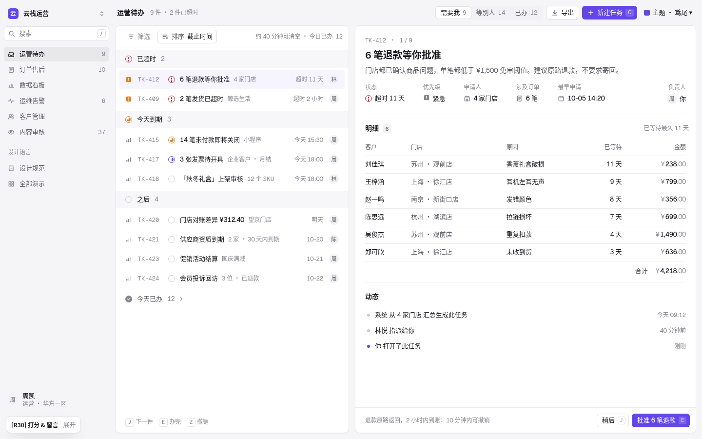
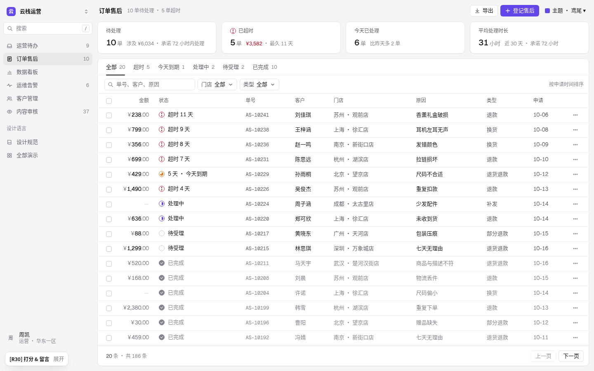
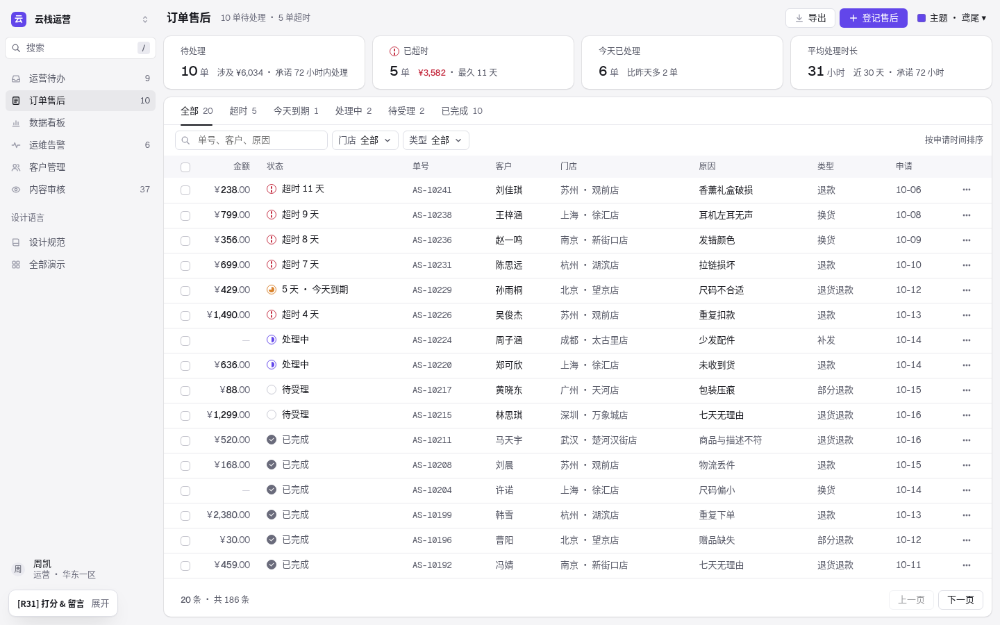
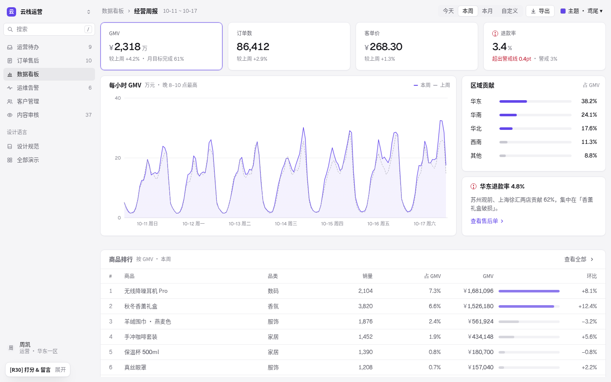


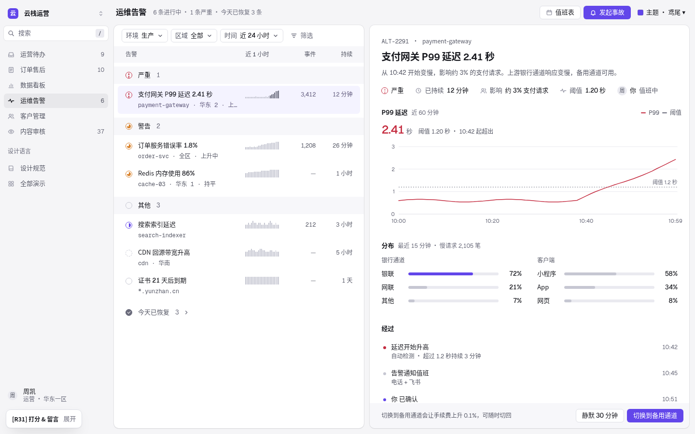
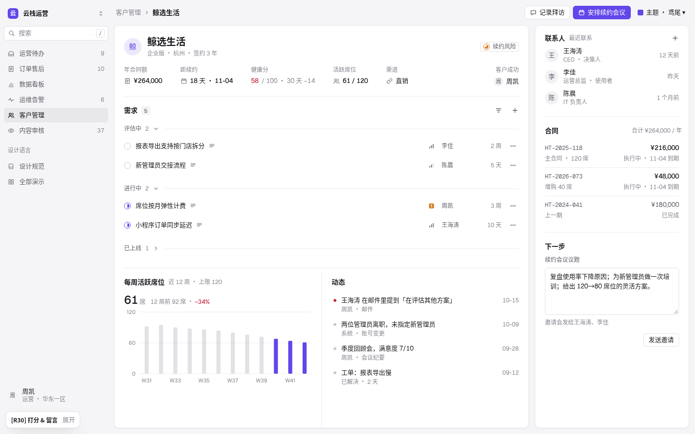


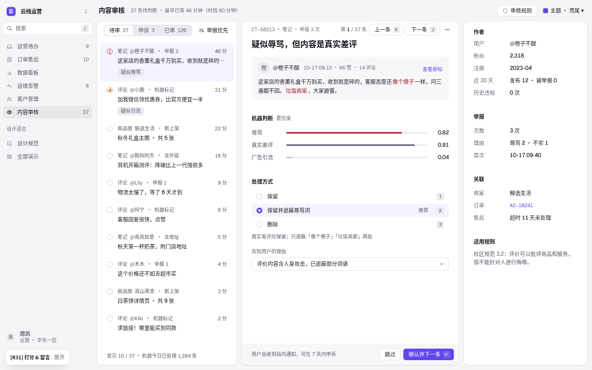
2 倍局部
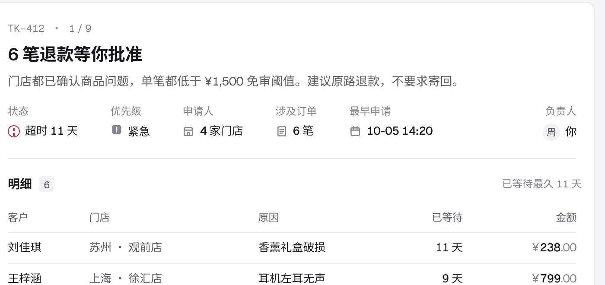
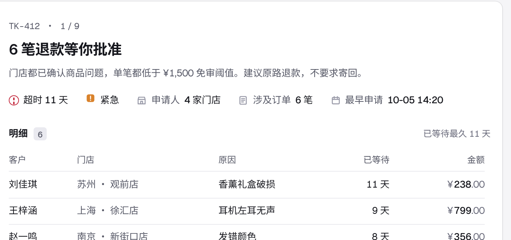
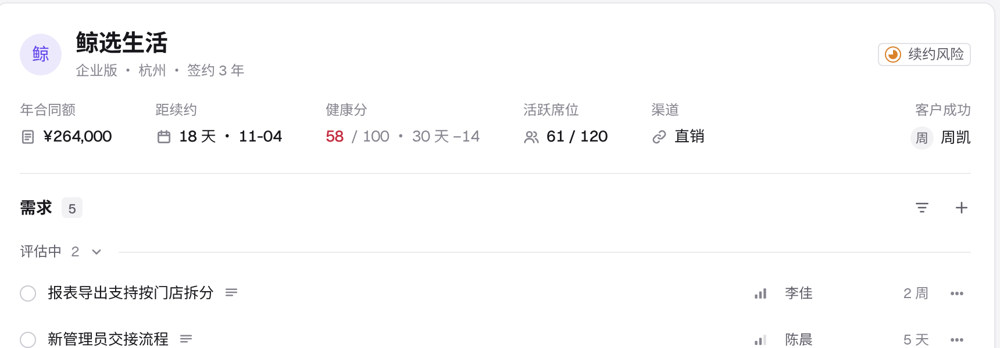
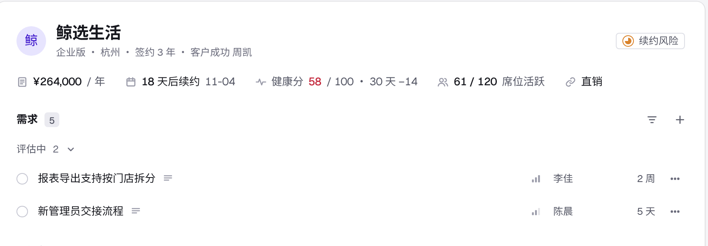
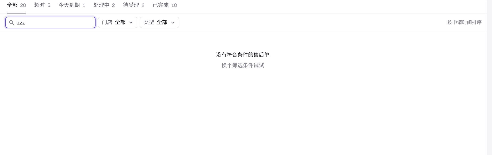
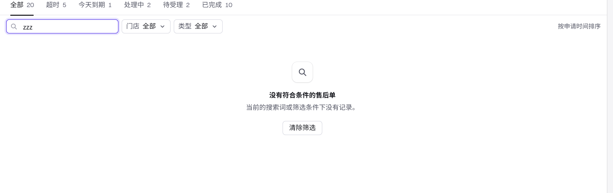
案例实测（文字和数字；截图只在本地研究，不发布）
2026-10-20 用无头浏览器打开公开页面（未登录），读取首屏可见元素的计算样式：GitHub 议题 / PR / Actions / 议题详情 / Pulse / 安全页、Vercel Geist（表格、空状态、颜色、材质）与文档、Stripe Billing / Invoicing / Docs、Attio 产品界面、Linear 首页与文档。Height 已于 2025-09-24 停服，存档站在本机网络下无法访问，未取得。Stripe / Vercel 控制台需登录，用其公开设计系统和产品渲染代替。
| 产品 | 主文字 | 次要灰（对比） | 最浅灰（对比 · 占比） | 边与面 |
|---|---|---|---|---|
| GitHub Primer | #1F2328 | #59636E（6.1:1） | 无第三级 | 边 #D1D9E0（冷蓝灰）；表头 / 列表头 #F6F8FA 色带；resting 投影两层 |
| Vercel Geist | #171717 | #4D4D4D（8.5:1，占 51–79%） | #8F8F8F（3.2:1 · 5–8%，只给占位 / 说明） | 边是投影环 rgba(0,0,0,.08)；材质 base → modal 叠 2–4 层投影 |
| Stripe | #061B31 | #50617A（6.3:1，冷石板蓝） | — | 1px #E5EDF5 浅蓝边 |
| Linear（深色） | #F7F8F8 / #D0D6E0 | #8A8F98（6.1:1） | #62666D（3.5:1，只在营销装饰） | 白 5–8% 半透明边 |
| Attio | #242629 | — | — | 产品表格浮在 #F4F4F5 色带上：环 + 柔影；表内保留列线（电子表格） |
| R30 | #17171C | #5E5E68（6.4:1） | #85858F（3.65:1 · 26–48%） | 1px #E6E6EC 描边 + 4.5% 投影 + 分区线 |
演示 ↔ 参考
| 演示 | 参考模式 | R31 变化 |
|---|---|---|
| 运营待办 | Linear 我的事项 + Catalyst 订单详情 | 列表面板 + 任务一块面。属性行读成一句话（「申请人 4 家门店」「涉及订单 6 笔」），去掉「负责人 你」（栏名已说明）；分区靠间距不画线；全部办完 / 切栏 / 未选中各有空状态和操作。 |
| 订单售后 | Stripe 发票列表 + GitHub 议题列表 | 紧凑指标格 + 表格卡。表头改浅色带、去掉工具栏线和分页线，只留行线；筛选为空时保留筛选条并给「清除筛选」。 |
| 数据看板 | Stripe 指标格 + Vercel Geist 材质 | 同类并列的卡：环 + 两层投影（el-1），可点的指标格悬停升一级（el-2）；卡内不画分隔线。 |
| 运维告警 | Sentry 问题流 + Linear 事项详情 | 告警一块面：「已持续 12 分钟」「阈值 1.20 秒」并进一行；分区靠间距；操作条浅色带贴底。 |
| 客户管理 | Linear 客户页 + Attio 记录 | 「¥264,000 / 年」「18 天后续约 11-04」「61 / 120 席位活跃」；客户成功并进抬头；右栏条目之间不画线。 |
| 内容审核 | Plain 收件箱 + GitHub 议题 | 中栏、右栏各一块面，分区无线；右栏作者 / 举报 / 关联是查阅型 kv，保留标签（规则 F6 的例外）。 |
令牌（本页色块直接读 app.css 变量）
灰阶 · 冷 235°
主色阶 · 鸢尾（每套主题各自定义，见 STYLE.md）
投影 · 五级
| 令牌 | 值 | 用途 |
|---|---|---|
--ring | 0 0 0 1px rgba(22,24,40,.07) | 每级投影的第一层，代替描边 |
--el-1 | ring + 0 1px 2px .05 + 0 1px 3px .03 | 面、卡 |
--el-2 | ring + 0 2px 4px .05 + 0 4px 10px .06 | 可点的指标格悬停 |
--el-3 | ring + 0 4px 8px −2px .06 + 0 12px 24px −6px .12 | 下拉菜单、Toast |
--el-4 | ring + 0 6px 12px −4px .05 + 0 18px 36px −8px .16 | 抽屉 |
--el-5 | 0 0 0 1px .05 + 0 24px 56px −8px .22 | 命令面板（紧影已淡出） |
--s-1…--s-7 | 4 / 8 / 12 / 16 / 24 / 32 / 48 | 间距尺；--pad 24 · --gap 12 · --sec 32 |
| 字号 | 11 / 12 / 13 / 16 / 20 / 24 | 键位坐标 / 元信息 / 正文 / 页标题 / 对象标题 / 指标 |
| 星蓝 | g-500 #8A8F9B · 实心按钮 #5B68E0 · el-1 = 白 6% 环 + 顶部 3.5% 高光 | 深色不靠投影分层 |
规则 F1–F10
左边按 R31 渲染，右边是 R30 的写法（或常见错误）。全部由本页 HTML 画出，不是截图。
F1 · 少边框：面靠环 + 投影成形，分区靠间距
依据：Refactoring UI「Use fewer borders」；Vercel Geist 材质（环 0 0 0 1px rgba(0,0,0,.08) + 叠加投影）、GitHub Primer（表头 #F6F8FA 色带）。实测贯穿线条 R30 → R31：34→17、70→38、49→11、35→20、27→12、39→20。
F2 · 间距尺：相邻档至少差 25%
依据：Refactoring UI「Establish a spacing and sizing system」「Avoid ambiguous spacing」；GitHub、Stripe、Attio 实测最常用 4 / 8 / 12 / 16 / 24。
F3 · 灰字对比 ≥ 4.5
依据：WCAG AA 正文 4.5:1。GitHub muted #59636E（6.1）、Stripe #50617A（6.3）、Vercel #4D4D4D（8.5）都远高于 4.5；只有占位提示才用更浅的灰。
F4 · 三级灰只给时间、编号、计数
依据：Vercel Geist 实测：#8F8F8F 只占文字 5–8%，二级 #4D4D4D 占 51–79%；GitHub 只有两级灰。
F5 · 字号六档
依据：Refactoring UI「Establish a type scale」；参考比例 12 · 14 · 16 · 18 · 20 · 24…，后台按 13 正文收紧。
F6 · 标签是最后手段
依据：Refactoring UI「Labels are a last resort」「Combine labels and values」；Linear / Attio 记录页属性多为「图标 + 值」。
F7 · 彩色底上不放灰字
依据：Refactoring UI「Don't use grey text on colored backgrounds」。
F8 · 色阶预先定义
依据：Refactoring UI「Define your shades up front」「Greys don't have to be grey」。
F9 · 五级投影，按高度取用
依据：Refactoring UI「Shadows can have two parts」「Use shadows to convey elevation」；GitHub Primer floating-small / medium / large、Geist small / medium / large / menu / modal 都是多层投影。
F10 · 空状态 = 图标 + 一句话 + 一个操作
依据：Refactoring UI「Don't overlook empty states」；Geist 空状态（40px 图标块 + 标题 + 一句话 + 操作）、GitHub「No results matched your search」保留筛选条。
保留的结构规则（R30）
- 一个对象 = 一块面
.sheet；标题、属性、明细、动态是面里的分区。 - 同类并列才用卡：看板指标格、图表卡、排行卡、订单紧凑指标格。
- 列表组头是贯穿色带（36px，状态图标 + 组名 + 计数，可折叠）。
- 操作条贴在对象底部（后果说明 + 按钮，sticky；R31 改为浅色带）。
- 画布 #F5F5F7，队列 / 记录页露出 ≤ 8%。
- 状态颜色只给 14px 图标；红色只给越线数字和危险操作；控件全平。
- 图表卡先给结论数字再给图；表格数值细节（等宽编号、金额右对齐两位小数）。
动效 M1–M7（不变）
每一对都是活的。R31 只加一处：可点的指标格悬停时投影升一级（el-1 → el-2，100ms）。
M1 · 页签 / 分段：160ms 滑动
M2 · 悬停只改底色
M3 · 展开收起：240ms 高度过渡
M4 · 抽屉：从右侧滑入，退出更快
M5 · 骨架屏形状和内容一致，只在真等待时
GMV
GMV
M6 · 数字只在变化时动一次
M7 · 首屏不表演
减少动态效果
CSS 层把所有动画、过渡的时长和延迟归零；JS 层跳过骨架、数字直接终值、图表不播放入场、抽屉直接到位。测试检查该模式下没有运行中的动画。
主题
鸢尾（默认）、钴蓝、湖蓝、石墨、晴窗、珊瑚、深色星蓝。每套亮色主题有自己的主色 50 / 100 / 200 / 300 / 700 和选中底元信息色；珊瑚用暖线。星蓝灰阶反向、实心按钮单独取色、面靠环 + 顶部高光。
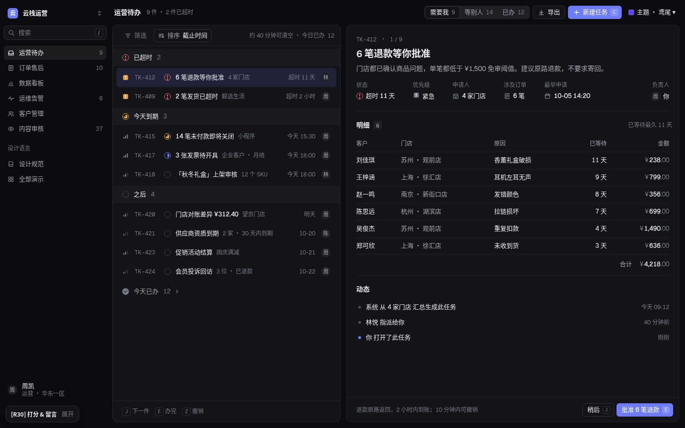
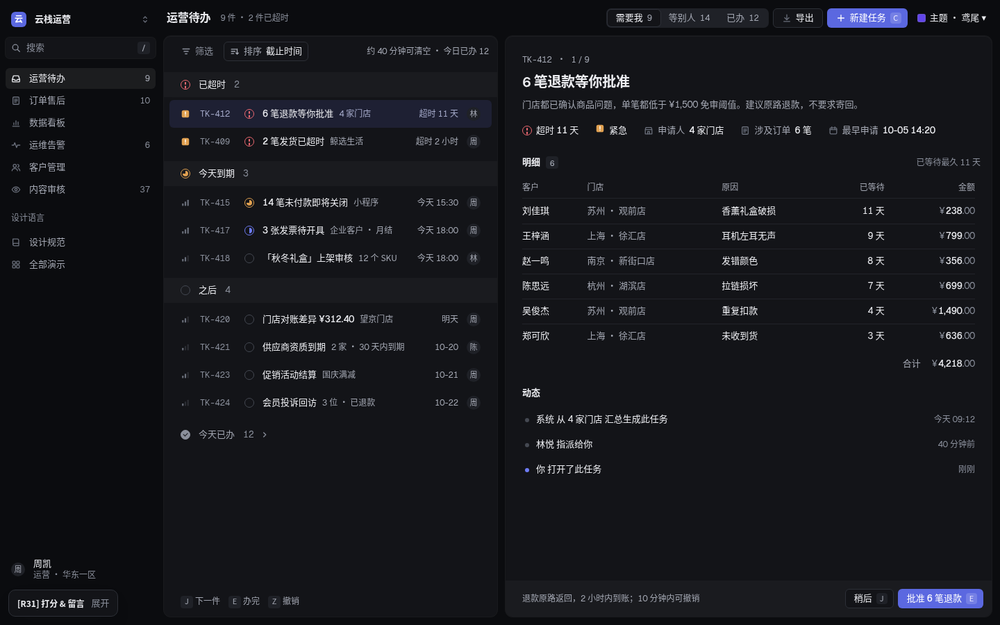
复核记录
| 轮次 | 发现 | 改动 |
|---|---|---|
| 0 · 研究 | Refactoring UI 审计十条；Linear / Stripe / Vercel / Attio / GitHub 实测（见上）。 | 定令牌：灰阶、主色阶、五级投影、间距尺、字号六档。 |
| 1 · r30 ↔ r31 全图 | 属性行「负责人」单独掉到第二行；去线后分区之间约 70px，显得散；反馈面板仍写 R30。 | 运营待办去掉「负责人 你」，客户成功并进抬头；面内分区间距收到约 32–36；data-round 改 r31。 |
| 2 · 量化 | 每页灰字不合格从 36–116 处降到 0–1；剩一处是选中导航上的计数（4.32）。 | 选中导航计数改二级灰。 |
| 3 · 星蓝 | 主按钮白字 3.58:1（R30 就有）。 | 星蓝实心按钮 #5B68E0；链接、描边仍用 #6E7CF5。 |
| 4 · 1280 + 其余主题 | 1280 下 6 页 0 处不合格；钴蓝、湖蓝、石墨、晴窗、珊瑚 0 处不合格。 | 无。 |
| 5 · 交互状态 | 全部办完后列表只剩「今天已办」、详情写「从左侧选一件」（R30 就有：空状态分支永远走不到）；「0 件 ·」多一个点；「约 40 分钟可清空」不更新。 | 列表空状态 + 「查看今天已办」；详情「都处理完了」；分隔点随超时数显示；剩余为 0 时写「已清空」。 |
| 6 · 2 倍局部 | 属性行一行读完；表头色带与行线对齐；指标格基线一致。 | 无。 |
验收清单（tools/m31_test.js · BAD 0）
- 7 套主题 × 6 页灰字对比 ≥ 4.5，0 处不合格。
- 三级灰占文字 ≤ 25%（实测 14–23%）。
- 字号只用 11 / 12 / 13 / 16 / 20 / 24。
- 贯穿线条：运营待办 17、订单 38、看板 11、运维 20、客户 12、审核 20（R30 34 / 70 / 49 / 35 / 27 / 39）。
- 属性行无独立标签（运营待办、运维、客户）。
- 空状态有图标、标题、一句话、操作；清除筛选恢复 20 行；全部办完有说明和操作。
- 面无描边：环 + 两层投影；五级投影、色阶、间距尺令牌已定义。
- R30 的结构和动效检查全部保留通过：一块面、操作条贴底、组头色带、骨架、抽屉、减少动态效果。